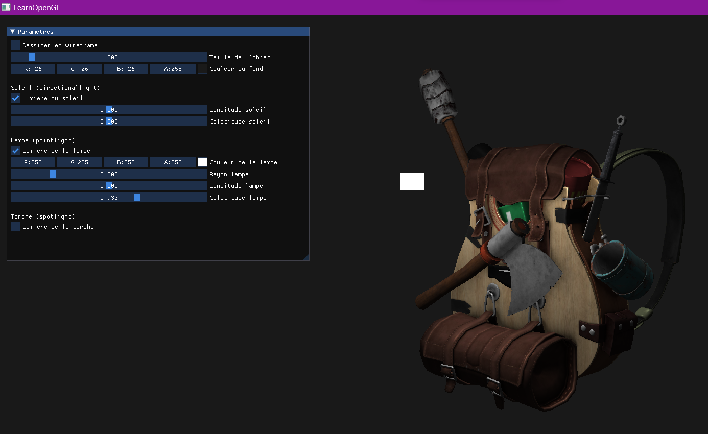
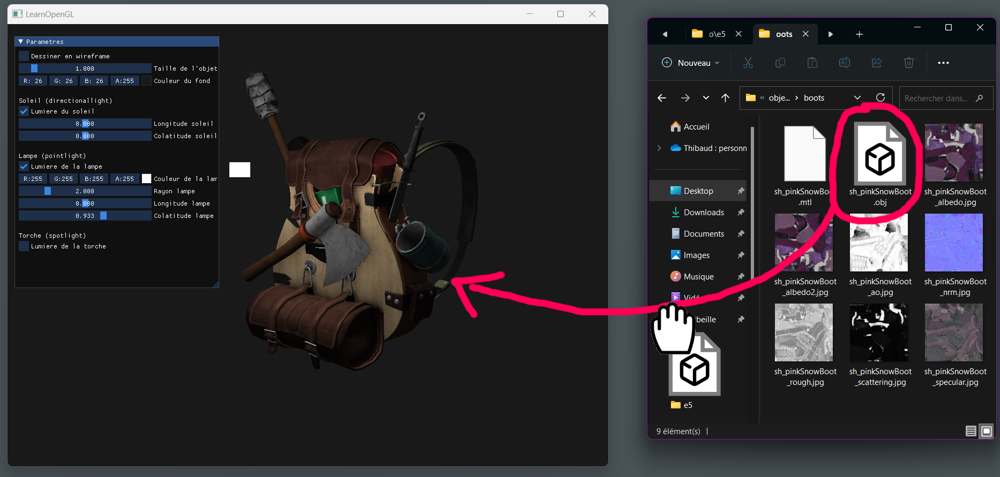
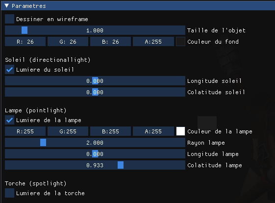

Documentation pour Visionneuse 3D OpenGL
Obtention du programme
Le programme et le code source sont installés sur l'ordinateur P35-10 à La Chartreuse.
Dans le cas où il est impossible d'accès, vous pouvez télécharger le code source et l'application ici:
Code source Application
Utilisation du programme
Le programme est un simple visionneur de fichiers 3D au format .obj. Des fichiers .obj sont fournis avec l'application pour essayer.

Déplacement
Il est possible de se déplacer dans la scène de rendu. Pour cela:
- Utilisez les touches Z, Q, S, D pour déplacer la caméra.
- Maintenez clic gauche sur la fenêtre de rendu et faites glisser la souris pour modifier la direction de la caméra.
- Utilisez la molette de la souris pour zoomer et dezoomer.
Changer l'objet
À partir du dossier où se trouve l'executable, se diriger dans "/objets/". Il y a plusieurs objets. Choisir l'un d'eux, rentrer dans le dossier puis drag & drop le fichier .obj dans la fenêtre de l'application pour que l'application charge le nouvel objet.

Utiliser l'interface utilisateur
L'interface utilisateur, nommée "Paramètres", est le rectangle resizable qui contient des options.

Voici la liste des options et leur effet:
- Dessiner en wireframe: Permet de dessiner l'objet en fil de fer
- Taille de l'objet': Permet, si besoin, de modifier la taille de l'objet ([0;10])
- Couleur du fond: Permet de sélectionner la couleur de fond, à l'arrière de l'objet. Note: plus cette couleur est claire, plus l'objet est éclairé.
- Soleil (directionallight)
- Lumière du soleil: Active (ou non) la lumière provenant du "soleil" (lumière provenant d'une direction, semblable à l'effet du soleil sur terre)
- Longitude soleil: Slider permettant de changer la direction d'où provient cette lumière (longitude, en coordonnées sphériques) ([-pi;pi])
- Colatitude soleil: Slider permettant de changer la direction d'où provient cette lumière (colatitude, en coordonnées sphériques) ([-pi;pi])
- Lampe (pointlight)
- Lumière de la lampe: Active (ou non) la lumière provenant de la "lampe" (simule un point lumineux)
- Couleur de la lampe: Permet de sélectionner la couleur de la lampe et de la lumière qu'elle emet
- Rayon lampe: Slider permettant de modifier la distance du point lumineux au centre de la scène ([0;10])
- Longitude lampe: Slider permettant de changer la position de cette lumière (longitude, en coordonnées sphériques) ([-pi;pi])
- Colatitude lampe: Slider permettant de changer la position de cette lumière (colatitude, en coordonnées sphériques) ([-pi;pi])
- Torche (spotlight)
- Lumière de la torche: Active (ou non) une lumière semblable à une lampe torche provenant de la caméra.